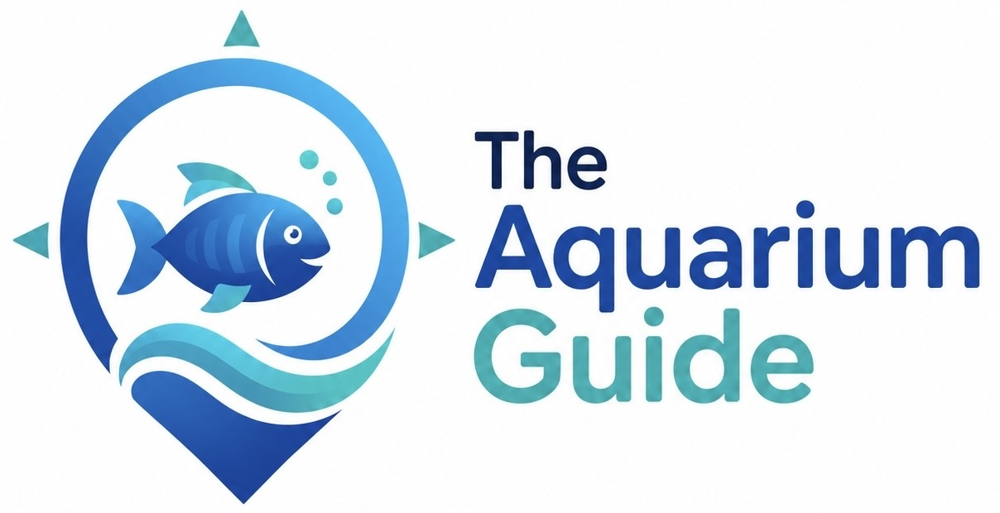
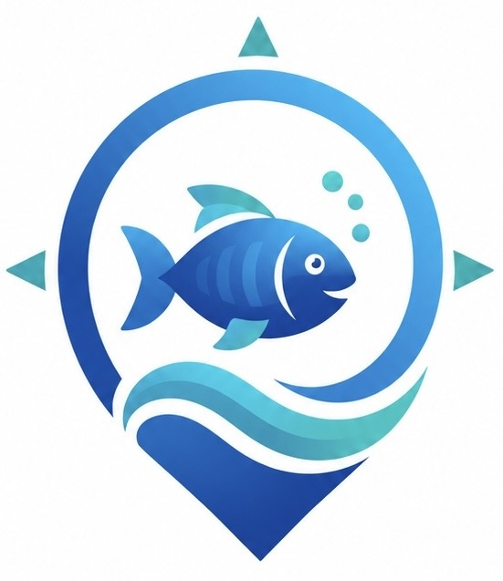

Best short route
Prioritize river otters, touch tanks, Great Ocean Tank, Jurassic Seas, and Sea Turtle Care Center.

South Carolina Aquarium • Charleston
A simple phone-friendly visit helper with a guided route, a quick map, and nearby places to grab a bite to eat.

Plan: allow 90–120 minutes. Official hours are usually 9:00 AM–5:00 PM, with last entry at 3:30 PM. Check live details before leaving.
Tap a stop when you finish it. Use the “Must see” tags if you need a shorter visit.
This is a simplified route cue sheet, not an official floor plan. Use the Aquarium’s map link on site for exact exhibit placement.
Tap a card to open directions. Call or check hours before heading over.
Prioritize river otters, touch tanks, Great Ocean Tank, Jurassic Seas, and Sea Turtle Care Center.
Harbor views, otters if active, jellyfish, large tank silhouettes, and turtles.
The Aquarium points guests to the city-operated garage at 24 Calhoun Street.
Keep the official map open and use elevators/ramps as needed. Ask staff for the easiest route.